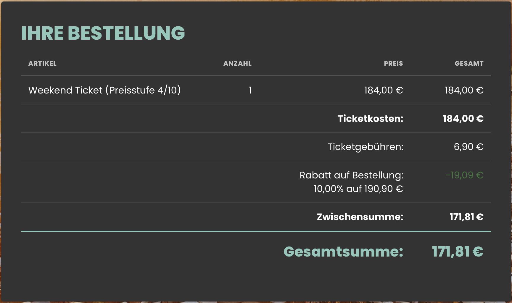

Rabattcode kopieren
Kopiere den Open Beatz Rabattcode Loyalty102739129593 oben mit einem Klick.
Du willst 2027 zum Open Beatz? Hier kannst du den 10% Rabattcode direkt kopieren und ihn ganz am Ende deiner Bestellung im offiziellen Open-Beatz-Ticketshop eingeben.
10 % Rabatt · Veranstalterinfos geprüft: · Ticketpreis und Gebühr geprüft: · 10 % Rabatt im Checkout dokumentiert:
So funktioniert's ↓SCHNELL ERKLÄRT
Kopiere den Open Beatz Rabattcode Loyalty102739129593 oben mit einem Klick.
Öffne den offiziellen Open-Beatz-Ticketshop, wähle dein gewünschtes Hauptticket aus und gehe durch den Bestellprozess.
Ganz am Ende deiner Bestellung findest du das Feld für den Rabattcode. Gib dort Loyalty102739129593 ein und sichere dir 10% Rabatt.
OPEN BEATZ 2027
Mit dem Rabattcode kannst du dir 10% Rabatt auf die rabattfähigen Haupttickets sichern.
Der Rabattcode steht direkt oben auf der Seite und lässt sich mit einem Klick kopieren.
Im offiziellen Ticketshop gibst du den Rabattcode ganz am Ende deiner Bestellung in das dafür vorgesehene Feld ein.
OPEN BEATZ GUTSCHEINCODE
Wenn du nach einem Open Beatz Gutscheincode 2027, einem Open Beatz Promo-Code oder einem Open Beatz Rabattcode suchst, ist damit hier derselbe 10%-Code gemeint. Der Code lautet Loyalty102739129593 und wird im offiziellen Ticketshop ganz am Ende der Bestellung eingegeben.
Der Rabatt gilt laut Open Beatz für rabattfähige Haupttickets. Prüfe vor dem Abschluss deiner Bestellung, ob der Rabatt im Warenkorb korrekt abgezogen wurde.
FAQ
Der Code lautet Loyalty102739129593. Am einfachsten kopierst du ihn über den Button oben auf der Seite. So musst du die lange Zahlenfolge nicht abtippen und kannst ihn später direkt im Ticketshop einfügen.
Mit Loyalty102739129593 bekommst du 10 % Rabatt auf rabattfähige Haupttickets. Wie viel du in Euro sparst, hängt von deiner Bestellung ab. Ein konkretes Beispiel mit Ticketpreis, Gebühren und Rabatt findest du im Preisbereich weiter unten.
Die Tickets kaufst du im offiziellen Open-Beatz-Ticketshop. Dort suchst du dein Ticket und die passenden Extras aus. Buchung und Bezahlung laufen über den Shop; hier auf der Seite findest du den Code und eine Orientierung für den Kauf.
Das Feld für den Rabattcode kommt laut Open Beatz ganz am Ende der Bestellung. Wenn du gerade erst dein Ticket oder Camping auswählst, bist du also noch nicht an der richtigen Stelle. Füge den Code im Rabattfeld ein und schau vor dem Bezahlen kurz nach, ob der Abzug in der Übersicht auftaucht.
Schau in die Bestellübersicht: Dort sollte der Rabatt als eigener Abzug auftauchen und die Gesamtsumme entsprechend sinken. Im dokumentierten Checkout heißt die Zeile „Rabatt auf Bestellung“. Nimm dir vor der Zahlung kurz Zeit für diesen Check. Im Screenshot weiter unten siehst du, wie das bei einem regulären Weekend Ticket aussieht.
Im dokumentierten Weekend-Warenkorb vom war das so: Der Shop hat 10 % auf 190,90 € aus Ticketpreis und Ticketgebühr abgezogen. Das waren 19,09 € Rabatt. Das ist ein konkretes Checkout-Beispiel; bei deiner Bestellung zählt die Berechnung, die dir der Shop tatsächlich anzeigt. Den Preisnachweis kannst du dir hier ansehen.
Wenn der Shop den Code nicht annimmt, kopiere Loyalty102739129593 noch einmal über den Button oben. Manchmal rutscht beim Einfügen einfach ein Leerzeichen vor oder hinter den Code.
Prüfe dann, ob du im Rabattfeld ganz am Ende der Bestellung bist und ein rabattfähiges Hauptticket ausgewählt hast. Die Loyalty-Bedingungen helfen bei Fragen zur Gültigkeit.
Bleibt die Seite nach der Eingabe hängen, kannst du den Shop neu öffnen und es noch einmal versuchen. Wird der Code weiterhin abgelehnt, findest du auf der offiziellen Kontaktseite Hilfe. Halte am besten die genaue Fehlermeldung bereit.
Das Prüfdatum steht direkt unter dem Code und bei den Preisangaben. Der Checkout-Screenshot hat zusätzlich sein eigenes Datum. So kannst du sehen, auf welchen Stand sich die Zahlen beziehen. Ich aktualisiere die Angaben bei meinen Checks; Preisstufen und Bedingungen können sich zwischendurch ändern. Schau deshalb vor der Zahlung noch einmal auf den Endpreis im Shop.
Nein, dosenbiergesicht.de ist meine private Seite. Ich war 2026 selbst beim Festival und sammle hier meinen Rabattcode sowie Infos zur Ticketbuchung. Die offiziellen Veranstalterinfos sind jeweils verlinkt. Bei Fragen zu einer bestehenden Bestellung hilft dir der offizielle Ticket-Support weiter.
VOR DEM TICKETKAUF
Das Festival findet vom 23. bis 25. Juli 2027 bei Herzogenaurach statt. Hier findest du eine kompakte Orientierung für deine Buchung. Stand der verlinkten Veranstalterinfos: .
Weekend: alle drei Festivaltage. 2 Days: Freitag und Samstag oder Samstag und Sonntag. Day: ein einzelner Festivaltag. Laut Veranstalter gibt es auch VIP-Varianten. Welche Kategorien gerade verfügbar sind, zeigt der Ticketshop.
Wenn du vor Ort campen möchtest, brauchst du zusätzlich zum Hauptticket den passenden Camping-Zusatzartikel. Beim Car Camping ist ein Pass pro motorisiertem Fahrzeug nötig; jede mitreisende Person braucht außerdem einen eigenen Camping Pass.
Ticketpreis und Gebühr geprüft am : Im offiziellen Ticketshop kostet das reguläre Weekend Ticket (Preisstufe 4/10) 184,00 € zuzüglich 6,90 € Ticketgebühr, zusammen 190,90 € vor Rabatt. Der dokumentierte Checkout-Screenshot vom 12.11.2026 zeigt 19,09 € Rabatt (10 % auf 190,90 €) und 171,81 € Gesamtpreis. Die Angaben gelten für den dokumentierten Warenkorb und können sich mit der Preisstufe ändern. Maßgeblich für den Endpreis ist der offizielle Ticketshop.
Je nach Anreise kommen Camping, Car Camping oder Parken hinzu. Auch beim VIP-Ticket ist das Parkticket nicht enthalten. Die Müllgebühr ist laut Veranstalter bereits im Camping Pass enthalten; ein zusätzliches Müllpfand vor Ort entfällt.
Im dokumentierten Checkout vom 12.11.2026 werden 10 % auf die Zwischensumme aus Ticketpreis und Ticketgebühr angewendet. Bei anderen Bestellungen kann die Berechnung abweichen.
| Ticketpreis | 184,00 € |
|---|---|
| Ticketgebühr | +6,90 € |
| Zwischensumme vor Rabatt | 190,90 € |
| 10 % Rabatt auf 190,90 € | −19,09 € |
| Gesamtpreis | 171,81 € |
Das Weekend Ticket kostet mit 10 % Rabatt insgesamt 171,81 € inklusive Ticketgebühr. Den zugehörigen Checkout-Screenshot vom 12.11.2026 findest du direkt darunter. Preisstufen, Gebühren und Endpreis können sich ändern.
Nutze den Code zum Kopieren oben und kontrolliere den tatsächlichen Abzug vor der Zahlung. Loyalty-Bedingungen ↗
Zusatzartikel lassen sich im Bestellprozess oder später über das My-Ticket Portal ergänzen. Dort werden die zu deinem Hauptticket passenden Artikel angezeigt. Den persönlichen Zugang findest du in deiner Bestellbestätigung.
So sieht die Bestellung für ein reguläres Weekend Ticket in Preisstufe 4/10 aus: 184,00 € Ticketpreis plus 6,90 € Ticketgebühr, abzüglich 19,09 € Rabatt. Übrig bleiben 171,81 €.

Ja. Laut Veranstalter benötigt für 2027 jeder Ticketinhaber ein eigenes Kundenkonto. Offizielle Informationen zum Kundenkonto ↗
PERSÖNLICHER EINBLICK
Autor: Philipp · Open Beatz Besucher 2026 · privat betriebene Informationsseite.
Ich war 2026 selbst beim Open Beatz und hatte ein VIP-Weekend-Ticket. Hier auf der Seite sammle ich meinen Rabattcode und die Ticketinfos, die ich beim Planen hilfreich finde. Wenn du gerade deine eigene Buchung zusammenstellst, soll dir das ein bisschen Sucherei abnehmen.
Überleg dir zuerst, wie dein Wochenende aussehen soll: Willst du alle drei Tage hin, nur einen Tag mitnehmen oder vor Ort campen? Davon hängt ab, welche Tickets und Extras du brauchst. Ich würde mir auch die An- und Rückreise gleich mit anschauen. Dann lässt sich besser einschätzen, was das Wochenende insgesamt kostet.
Zum Budget gehören für mich auch Essen, Getränke und etwas Puffer für unterwegs. Mein Tipp wäre deshalb, die Kosten einmal grob zusammenzurechnen, bevor du buchst. Und falls du mit mehreren Leuten fährst: Klärt am besten vorher, wer an welchen Tagen dabei ist und wie ihr anreist.
Für mich zählt am Ende die Summe, die im Warenkorb steht. Deshalb schaue ich bei meinen Checks auf Ticketpreis, Gebühren und den tatsächlichen Rabattabzug. Im Ticketbereich findest du die Rechnung dazu; den Checkout-Screenshot kannst du auch in voller Größe öffnen. So kannst du die Zahlen selbst nachvollziehen.
Meine eigene Festivalteilnahme war 2026. Die Angaben für Open Beatz 2027 halte ich anhand der Ticket-Checks und der verlinkten Veranstalterinfos aktuell. Das jeweilige Datum steht direkt dabei. Wenn du später auf die Seite zurückkommst, kannst du so sehen, von wann der Preisnachweis stammt.
Für den Festivaltag selbst würde ich mir eine kleine Checkliste machen: Ticket griffbereit, Handy und Powerbank geladen und Gehörschutz eingepackt. Wenn ihr als Gruppe unterwegs seid, macht am besten vorher einen Treffpunkt aus. Das erspart euch später die Sucherei, falls ihr euch zwischen den Bühnen mal aus den Augen verliert.
Mit deiner Zustimmung nutze ich Google Analytics, um zu sehen, wie diese Website genutzt wird und woher Besucher kommen. Dabei werden Cookies gesetzt und Nutzungs- und Gerätedaten an Google übermittelt; eine Verarbeitung in den USA ist möglich. Ohne Zustimmung bleibt Analytics ausgeschaltet. Deine Auswahl wird für 180 Tage auf diesem Gerät gespeichert. Du kannst sie jederzeit über „Statistik-Einstellungen“ im Footer ändern. Infos zur Datenverarbeitung bei Google ↗